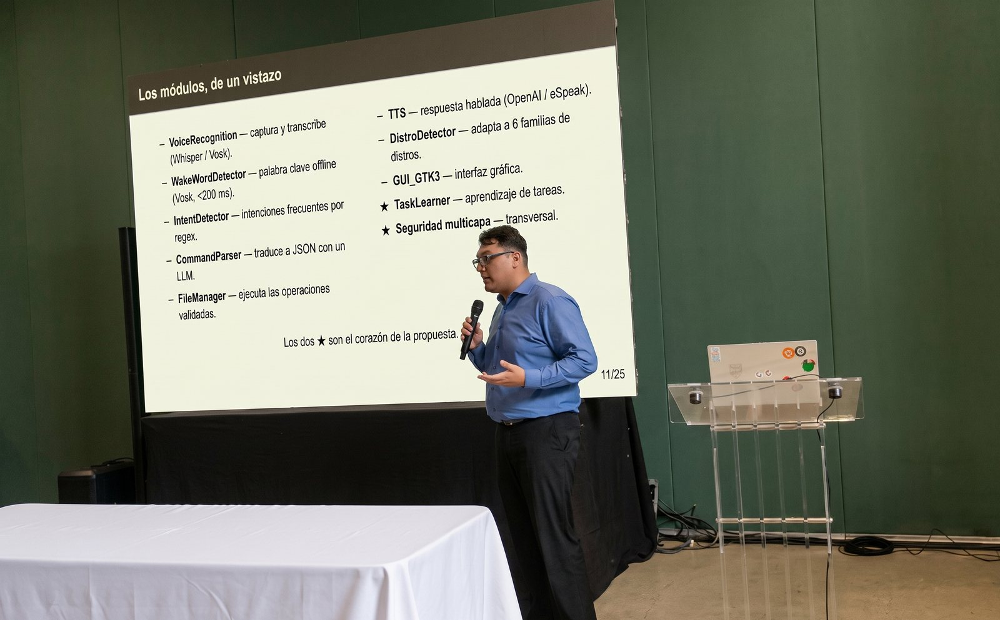

📄 Sobre el artículo
El artículo propone la Inteligencia Artificial Centrada en el Humano como paradigma para repensar la interfaz gráfica de escritorio y, en general, la forma en que las personas interactúan con los sistemas operativos.
Se vincula directamente con LIMA, mi proyecto de tesis, que presenté en esta misma conferencia: un asistente que traduce lenguaje natural en acciones del sistema manteniendo a la persona informada y en control.
🎤 La ponencia

❝ Cómo citar
Toledo, J., & Rodríguez, R. (2026). Hacia la Evolución de la GUI Desktop: IA Centrada en el Humano como Paradigma para Repensar la Interacción con Sistemas Operativos. In Anais da XII Conferência Latino-Americana de Interação Humano-Computador, (pp. 181-185). Porto Alegre: SBC. doi:10.5753/clihc.2026.21652
Ver BibTeX
@inproceedings{Toledo2026CLIHC,
author = {Toledo, Jose and Rodríguez, Ricardo},
title = {Hacia la Evolución de la {GUI} Desktop: {IA} Centrada en el Humano como Paradigma para Repensar la Interacción con Sistemas Operativos},
booktitle = {Anais da XII Conferência Latino-Americana de Interação Humano-Computador},
pages = {181--185},
year = {2026},
publisher = {SBC},
address = {Porto Alegre},
doi = {10.5753/clihc.2026.21652}
}